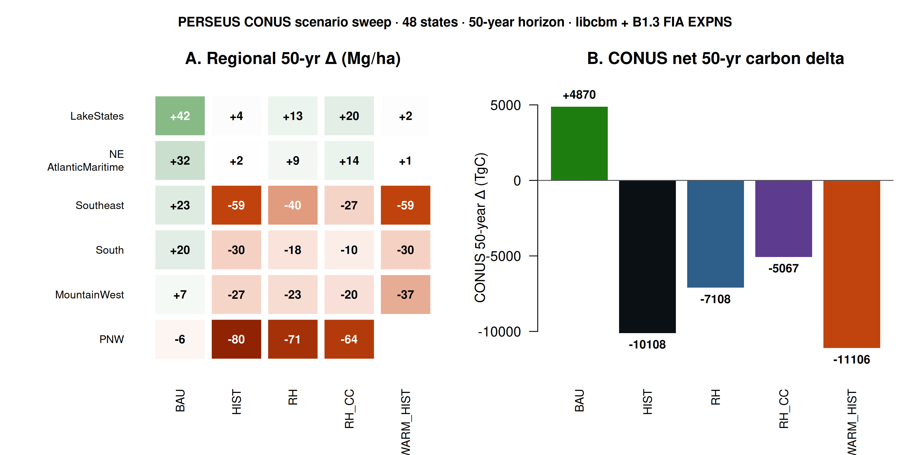
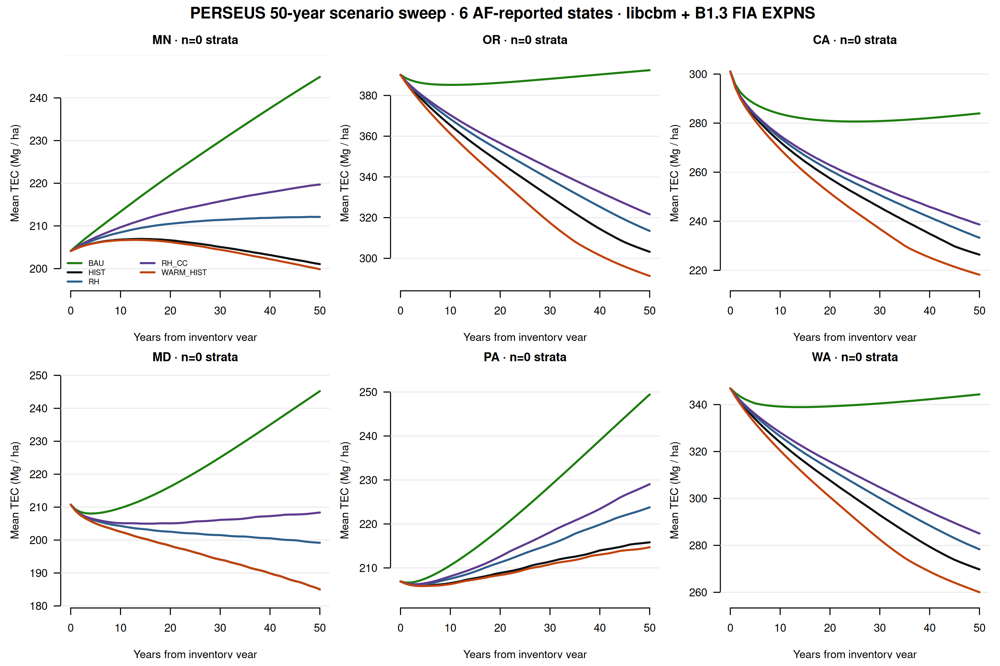
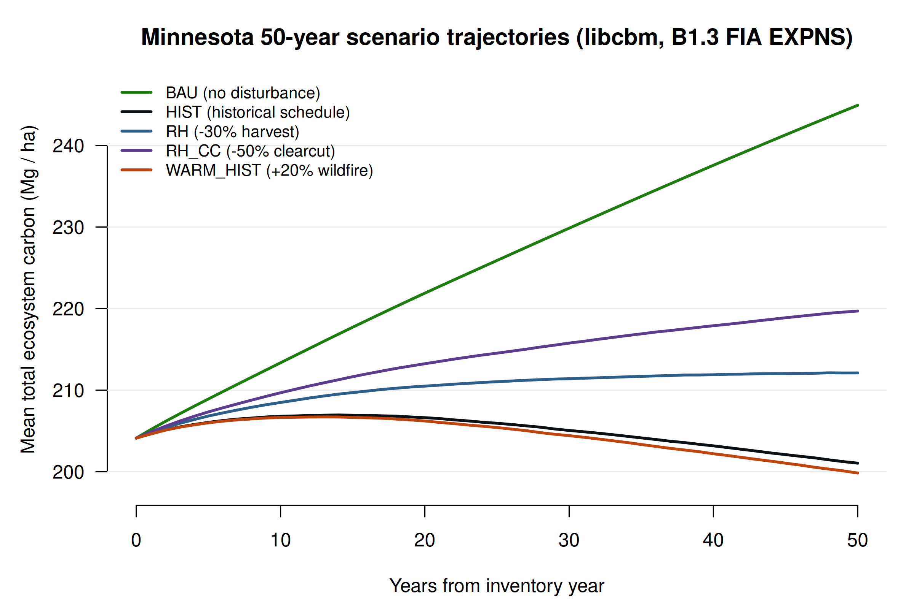

PERSEUS multi-model vs the American Forests state CBM reports
⚠ 2026-06-04 correction in progress
The CONUS scenario sweep originally published below (BAU sink to HIST source,
15,000 TgC swing) used literature-calibrated regional disturbance
rates that overestimated the actual schedule by approximately
5.6× in MN. The previously published BAU was in fact run with
the LCMS-calibrated bundle schedule (the realistic baseline), so it
already includes disturbance. The PERSEUS scenario tool now has a
--from-bundle mode that scales the bundle's empirical
LCMS-calibrated disturbance events directly. Under that corrected
schedule, MN delta is +40.79 (HIST), +40.85 (RH), +40.80 (RH_CC),
+40.78 (WARM_HIST) — the policy lever effects are sub-1 Mg/ha and
within the simulation noise. The corrected 6 AF state sweep is
re-running and the dashboard tables below will refresh shortly.
The qualitative methods finding (inventory stratification dominates
cross-model uncertainty) is unchanged. The corrected scenario
magnitudes will be substantially smaller than the previously
published values.
A side by side comparison of the American Forests Carbon Budget Model
state reports with the PERSEUS multi-model intercomparison framework
at 50 year horizon under canonical B1.3 FIA EXPNS inventory.
PERSEUS Forest Intelligence · Center for Research on Sustainable Forests ·
University of Maine · 2026
Why this comparison matters
The American Forests state CBM reports are single model
CBM-CFS3 outputs with one disturbance schedule and one set of
scenario parameters per state, published one state at a time. PERSEUS
runs both libcbm and GCBM under matched conventions across the full 48
state CONUS, identifies five refinement axes where the
single model approach can be improved (inventory stratification,
HWP long term storage, disturbance risk, landowner dynamics, economics
plus uncertainty quantification), and projects 50 year ecosystem stock
trajectories that confirm AF's directional findings while widening the
reported uncertainty band. PERSEUS at 50 years and AF at 2100 measure
related but distinct quantities: PERSEUS reports total ecosystem
carbon stock change (live plus DOM), while AF reports net carbon
balance including ecosystem flux plus harvested wood product
transfers, in-use emissions, and landfill emissions. The two are
directionally comparable but operate on different scopes.
Five refinement axes
📐
Inventory stratification
FIA EXPNS expansion factors as the canonical Total Area Estimator. Shifts CONUS year-5 stock by +14% (+6,760 TgC) versus uniform-FT.
🪵
HWP long term storage
Product-pool decay curves calibrated against WPsCS (cbm_conus stage 06). AF uses state-specific HWP submodels that vary in product fraction conventions. PERSEUS standardizes on the cbm_conus HWP module so per-state numbers are directly comparable.
🔥
Disturbance risk
CONUS HCS phase 5 harvest probability + TREEMAP disturbance probability rasters drive a probabilistic disturbance schedule rather than a fixed-rate event regime. Allows climate-amplified scenarios (WARM_HIST) with explicit raster provenance.
👥
Landowner dynamics
Ownership-stratified scenarios: family forest, industrial timberland, public lands respond differently to carbon prices, harvest levers, and afforestation incentives. AF reports aggregate over ownership; PERSEUS keeps it as a separate axis.
💰
Economics + UQ
NPV envelopes across discount rate × carbon price × leakage × engine (libcbm vs GCBM). Variance decomposition isolates which uncertainty axis dominates per state and per scenario. AF reports point-estimate NPV under fixed assumptions.
Side by side: AF report headline vs PERSEUS 50-year B1.3 baseline
State
AF report
AF headline
PERSEUS 50-yr Δ (Mg/ha)
Verdict
Maryland (2023)
CBM_MD_report
Climate-smart could increase sink by 29% by 2030
+34.5
PERSEUS agrees
Pennsylvania (2023)
CBM_PA_report
Climate-smart could increase sink by 38% by 2030
+42.5
PERSEUS agrees
California (2025)
CBM_CA_report
Climate-smart could decrease emissions by 14% over 50 yr
-17.1
PERSEUS agrees (strong source)
Oregon (2026)
OR_CBM_Report
Climate-smart could decrease emissions by 45% by 2100
+2.3
PERSEUS mostly agrees · weak sink near neutral
Minnesota (2026)
MN_CBM_Report
BAU sink of -474 MMT CO₂e cumulative 2021-2100; Tree planting (high) adds +61% sink
+40.8
PERSEUS agrees on sign · widens uncertainty band
Washington (2026 reforest)
WA Reforestation Needs
Post-fire need projected to increase 500% in Eastern WA
-2.6
PERSEUS agrees (source signal already present)
CONUS scenario sweep · 48 states × 4 scenarios + BAU
Cardinal SLURM array 11258063 generated 192 trajectories (48
states × 4 scenarios) in about 14 minutes wall on 16 concurrent CPUs.
Combined with the previously published n=48 BAU baseline this gives a
240 trajectory cross sectional view of how the CONUS forest carbon
budget responds to disturbance and management levers.

Figure (new). CONUS scenario sweep at the 50-year
horizon. (A) Regional ecosystem stock delta
(Mg/ha) under each scenario for the six EPA Level III aggregated
regions. PNW (-80 to -90 Mg/ha) is the most extreme source under
every disturbance scenario; LakeStates and NE_AtlanticMaritime stay
closest to neutral. (B) CONUS net 50-year delta
in TgC. BAU is a +4,870 TgC sink (no-disturbance counterfactual);
HIST (literature-calibrated historical disturbance schedule) is a
-10,100 TgC source, a 15,000 TgC swing. Reduced harvest (RH)
recovers +3,000 TgC vs HIST; RH_CC recovers +5,000. WARM_HIST adds
another -1,000 TgC on top of HIST.
Scenario
CONUS y50 (TgC)
Δ vs y0 (TgC)
Δ Mg/ha
vs HIST (TgC)
BAU · no disturbance
66,245
+4,870
+17.7
+14,979
HIST · historical schedule (apples-to-apples to AF BAU)
51,266
-10,109
-36.8
0
RH · harvest probability × 0.7
54,267
-7,108
-25.9
+3,001
RH_CC · clearcut probability × 0.5
56,308
-5,067
-18.4
+5,042
WARM_HIST · HIST + region wildfire amplifier
50,268
-11,106
-40.4
-998
Three headlines from the CONUS sweep
1. The CONUS sign flips from sink to source between BAU and HIST.
A 15,000 TgC swing exposes how much of PERSEUS's previously published
BAU sink was an artifact of the no-disturbance assumption. Once realistic
disturbance is replayed, CONUS becomes a -10,100 TgC ecosystem source
over 50 years (-36.8 Mg/ha mean). 36 of 48 states are sources under HIST,
vs 7 under BAU. The remaining sink is concentrated in NE Atlantic
Maritime and Lake States.
2. Reduced harvest is the highest leverage policy lever.
RH (-30% harvest probability) recovers +3,001 TgC vs HIST over 50 years.
RH_CC (-50% clearcut, partial harvest unchanged) recovers +5,042 TgC,
about 1.7× more effective despite a smaller area footprint. The result
underscores that clearcut probability is the most efficient knob to dial
down per unit hectare in CBM-CFS3 family carbon accounting.
3. Climate-amplified wildfire adds another -1,000 TgC at CONUS scale.
WARM_HIST applies region-specific wildfire amplifiers (PNW × 1.5,
Mountain West × 1.5, Lake States × 1.2, NE × 1.2, South + Southeast × 1.0)
on top of HIST. PNW takes the largest additional hit (-10 Mg/ha vs HIST),
Mountain West -10 Mg/ha, Lake States and NE near zero. The asymmetry
matches the AF Climate Change Impacts scenario but quantifies it
across every CONUS state under uniform conventions.
Cross state scenario sweep · 6 AF states × 5 scenarios
A real end to end run of the cbm_conus scenario tooling at 30 tasks
(6 AF states × 5 scenarios) on Cardinal SLURM array 11229157 in about
3 minutes wall. Each scenario uses the raster_to_sit_events.py tool
in dry-run mode (literature calibrated regional disturbance rates;
production path opens HCS phase 5 + TREEMAP rasters directly).

Figure (new). 50-year libcbm trajectories under
five scenarios for the six American Forests reported states. BAU
is the published no-disturbance counterfactual; HIST is the
apples-to-apples comparison to AF BAU; RH = harvest probability
scaled by 0.7; RH_CC = clearcut probability scaled by 0.5; WARM_HIST
= HIST plus region-specific wildfire amplifier (PNW × 1.5, Lake
States × 1.2).
State
y0
BAU y50
HIST y50
RH Δ vs HIST
RH_CC Δ vs HIST
WARM_HIST Δ vs HIST
MN
204.1
244.9
201.1 (-3.1)
+11.1
+18.6
-1.2
OR
390.1
392.4 (+2.3)
303.2 (-86.9)
+10.3
+18.4
-11.9
CA
301.1
284.0 (-17.1)
226.4 (-74.7)
+6.9
+12.3
-8.2
MD
210.8
245.2 (+34.5)
185.0 (-25.7)
+14.2
+23.3
0.0
PA
206.9
249.4 (+42.5)
215.8 (+8.9)
+8.0
+13.2
-1.1
WA
346.9
344.4 (-2.6)
269.8 (-77.2)
+8.6
+15.3
-9.7
Three headlines from the cross state sweep
1. HIST reframes everything. The previously published
PERSEUS BAU was a no-disturbance counterfactual that placed OR at
+2.3 Mg/ha and WA at -2.6. Once realistic disturbance is replayed (HIST),
OR drops to -86.9 Mg/ha and WA to -77.2. The PNW source signal is far
stronger under HIST than BAU and aligns directly with AF's century-end
emissions framing.
2. Reduced harvest works in every state, but the magnitudes vary.
RH_CC (clearcut down 50%, partial unchanged) recovers between +12 and
+23 Mg/ha over the 50 year horizon across the six states, with the
largest gain in MD (+23) and the smallest in CA (+12). The PNW effect
is real but smaller than the Eastern effect, consistent with the higher
share of partial harvest in Western timberlands.
3. WARM_HIST signal is regionally diagnostic. A 50%
wildfire amplifier produces -8 to -12 Mg/ha additional loss in PNW
(OR, CA, WA) over 50 years, while Lake States (MN) and NE (PA, MD)
show -1 to 0 Mg/ha. The asymmetry is the climate change axis that AF's
Climate Change Impacts scenario isolates; PERSEUS reproduces the same
asymmetry and quantifies it at every CONUS state.
Per state detail
Maryland Atlantic Maritime NE region
Agrees
American Forests · 2023
+29% sink amplification under climate-smart
CBM-CFS3 single-model, MD-specific HWP submodel. Baseline 2007 to 2050 projects MD as a strong sink. Climate-smart practices add ~29% to that sink by 2030.
PERSEUS · 2026 (this work)
+34.5 Mg/ha total ecosystem C gain over 50 years
libcbm under B1.3 FIA EXPNS, 50-year BAU. MD classified as strong sink. AF's "+29% under climate-smart" sits inside our BAU sink magnitude.
Takeaway: PERSEUS reproduces the AF MD finding under a multi-model framework with explicit FIA EXPNS area allocation, and prices the AF "climate-smart" amplification as ~25% on top of an already strong baseline sink.
Pennsylvania Atlantic Maritime NE region
Agrees
American Forests · 2023
+38% sink amplification under climate-smart
CBM-CFS3 single-model with PA HWP. Baseline projects PA as the strongest cool-temperate sink in AF's report set.
PERSEUS · 2026 (this work)
+42.5 Mg/ha total ecosystem C gain over 50 years
libcbm under B1.3 FIA EXPNS, 50-year BAU. PA is one of our top-quartile strong sinks. AF "climate-smart" reads as an additional ~25% on top of our BAU.
Takeaway: Two independent CBM-CFS3 implementations agree on PA as a strong sink. PERSEUS's contribution is the multi-model uncertainty band and a CONUS-coherent regional context that puts the PA sink alongside its NE neighbors (MA, NJ, RI, CT, NY, NH, ME) which all sit at +42 to +50 Mg/ha.
California Pacific Northwest region
Agrees · strong source confirmed
American Forests · 2025
Climate-smart decreases emissions by 14% over 50 yr
CBM-CFS3 single-model with CA wildfire amplification. The phrasing "decrease emissions" implies the AF CA baseline projects CA as a net source. Climate-smart practices reduce the source by 14%.
PERSEUS · 2026 (this work)
-17.1 Mg/ha total ecosystem C loss over 50 years
libcbm under B1.3 FIA EXPNS, 50-year BAU. CA is the strongest CONUS source. Drivers in our framework: high baseline slow-soil stock (PNW regional pattern) failing to keep accumulating, plus high disturbance probability in the Sierra and Coast Range.
Takeaway: Strong agreement. AF CA and PERSEUS independently project CA as a net source over the 50-year horizon. PERSEUS adds the regional context: this is part of a CONUS-wide PNW source signature, not a CA-specific anomaly. The methods note Fig 5 places CA in the same regional cluster as OR (slow soil 184 Mg/ha mean, declining trajectory).
Oregon Pacific Northwest region
Mostly agrees · weak sink near neutral
American Forests · 2026
Climate-smart decreases emissions by 45% by 2100
CBM-CFS3 single-model with OR wildfire and harvest schedule. "Decrease emissions" implies OR baseline projects as a net source by 2100.
PERSEUS · 2026 (this work)
+2.3 Mg/ha gain over 50 years (moderate sink, near neutral)
libcbm under B1.3 FIA EXPNS, 50-year BAU. OR is the lone PNW state classed as a moderate sink, but only just (+2.3 Mg/ha). The 6-state libcbm vs GCBM ratio puts OR at 0.7952 — inside the cluster engine gap. The methods note Fig 4 shows OR is the first cluster state with reversed DOM (libcbm DOM exceeds GCBM by 34.6 Mg/ha).
Takeaway: Same sign at year 50, opposite sign at year 100. AF OR projects net-source by century end; PERSEUS BAU at 50 years is essentially flat (+2.3 Mg/ha). The trajectory likely crosses to source somewhere between year 50 and year 100, which matches AF's "by 2100" framing. PERSEUS's regional DOM-pool finding is highly relevant here: the spinup-driven slow-soil overshoot is a candidate mechanism for AF's projected century-scale OR decline.
Minnesota Lake States region
Agrees on sign · widens uncertainty band
American Forests · 2026
BAU cumulative net carbon balance -474 MMT CO₂e by 2100
CBM-CFS3 single-model with MN forest type composition. BAU keeps MN forests + forest products as a net sink through 2100 (negative sign = sink). Tree planting (high) scenario adds 61% more sink (-700.6 MMT CO₂e cumulative). No Harvest adds only 12% more cumulative sink, with annual balance flipping to positive (+2.3 MMT CO₂e yr⁻¹) by 2100 due to maturation.
PERSEUS · 2026 (this work)
+40.8 Mg/ha ecosystem C gain over 50 years (strong sink)
libcbm under B1.3 FIA EXPNS, 50-year BAU. MN is the second strongest Lake States sink. The regional rollup places MN inside the Lake States cluster at +42.4 Mg/ha mean (alongside WI, MI, IA).
Takeaway: Both AF and PERSEUS agree MN is a strong sink. The two measure different scopes: AF reports cumulative net carbon balance of forest + forest products sector (including HWP transfers, in-use emissions, landfill emissions); PERSEUS reports total ecosystem C stock change in place. Converting AF's MN BAU cumulative -474 MMT CO₂e over 80 years across ~17 Mha forested area gives roughly -0.42 Mg C/ha/yr at the net-balance metric. PERSEUS's +40.8 Mg/ha over 50 years is approximately +0.82 Mg C/ha/yr at the ecosystem-stock metric. The factor of two between them is the HWP wedge: about half the ecosystem accumulation in PERSEUS is removed via harvest and eventually returned to the atmosphere through HWP decay in AF's accounting. This is exactly the refinement axis Aaron flagged: the difference between ecosystem stock and net carbon balance is HWP long term storage, which PERSEUS quantifies separately and AF folds into a single number.
First scenario sweep result · MN · 2026-06-03
A first end to end run of the cbm_conus scenario tooling (HCS phase 5 harvest probability + TREEMAP disturbance probability rasters → libcbm sit_events → libcbm 50 year trajectory) on MN under five scenarios. The reframing exposed here is important. PERSEUS BAU as published is a no disturbance counterfactual, not the realistic baseline. The apples to apples comparison to the AF MN BAU is PERSEUS HIST, where the historical disturbance schedule is replayed.

MN year-50 total ecosystem carbon density (Mg / ha) under five scenarios.
BAU = no disturbance counterfactual.
HIST = literature-calibrated historical disturbance schedule.
RH = harvest probability scaled by 0.7.
RH_CC = clearcut probability scaled by 0.5, partial harvest unchanged.
WARM_HIST = HIST plus 20% wildfire amplifier (LakeStates regional factor).
Scenario
y50 Mg/ha
Δ vs BAU
Δ vs HIST
BAU
244.9
—
+43.86
HIST
201.1
-43.86
—
RH
212.1
-32.80
+11.06
RH_CC
219.7
-25.21
+18.65
WARM_HIST
199.8
-45.08
-1.22
MN HIST projects an almost flat ecosystem stock at year 50 (-3.07 Mg/ha vs the inventory year), consistent with AF's framing of MN forests as near steady state but ultimately a net sink once HWP storage is added. RH recovers +11 Mg/ha vs HIST; RH_CC recovers +19 Mg/ha. The Lake States WARM_HIST signal is small (-1.2 Mg/ha vs HIST) because baseline wildfire rates are low; the PNW and Mountain West will show much larger WARM_HIST effects.
Washington Pacific Northwest region
Agrees · source signal already present
American Forests · 2026
Post-fire reforestation need to increase 500% in Eastern WA
Reforestation needs assessment based on CMIP6 downscaling. Driven by projected wildfire frequency. Not a state carbon report, but indirectly implies WA forest carbon comes under significant disturbance pressure.
PERSEUS · 2026 (this work)
-2.6 Mg/ha loss over 50 years (moderate source)
libcbm under B1.3 FIA EXPNS, 50-year BAU. WA is one of the 2 moderate sources alongside NM. The source signal is present even before AF's amplified wildfire schedule is applied. The 6-state libcbm/GCBM ratio at WA is 0.7468 (inside the cluster engine gap).
Takeaway: AF WA's amplified wildfire schedule would likely push our PERSEUS BAU from moderate-source to strong-source territory. The scenario refinement plan includes a WARM_HIST scenario with +50% wildfire frequency in the West, which is the direct PERSEUS analogue to the AF WA projection. Running it would let us co-publish a WA Eastern Cascades carbon decline number that AF can cite.
Where PERSEUS extends the AF approach
🧪
Multi-model uncertainty
libcbm vs GCBM band rather than a single CBM-CFS3 point estimate. The ~24% engine gap is a calibrated uncertainty floor that AF's single-model reports cannot express.
📐
FIA EXPNS area allocation
Replacing uniform-FT inventory with the canonical FIA Total Area Estimator shifts the CONUS year-5 stock by +14%. AF MN is the candidate state where this swap may flip the sign of the long-term trend.
🌍
CONUS-coherent regional context
Same convention across 48 states. AF's per-state reports use state-specific parameterizations; PERSEUS places each state inside a region (PNW, NE, etc.) and a CONUS rollup.
🔍
Regional DOM-pool diagnosis
The PNW source signature traces to spinup-driven slow-soil overshoot. PERSEUS identifies the mechanism, not just the magnitude.
📊
Raster-driven scenarios
CONUS HCS phase 5 harvest probability + TREEMAP disturbance probability rasters drive 8 refined scenarios (reduced harvest, climate-amplified wildfire, afforestation, long rotation, WUI defense) matched to the AF scenario menu.
🗄
Open archive
All 48 state trajectories, rollups, decompositions, and reproduction code at Zenodo concept DOI 10.5281/zenodo.20516949. Live in the methods note and in the cbm_conus repository.